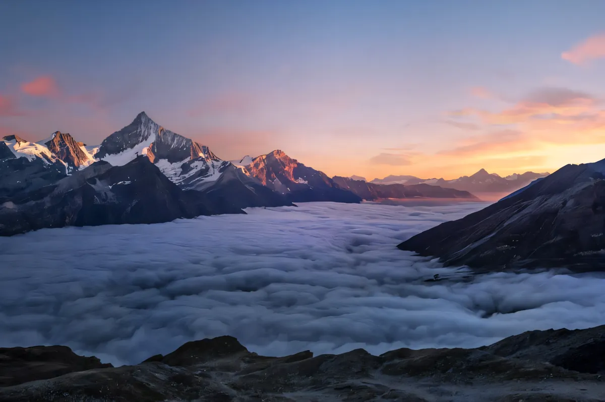

Turning Still Photos Into AI Video Clips and Upscaling Them to 4K

Generating video from a text prompt alone forces you to roll the dice on character appearance, wardrobe, lighting and set design all at the same time. Professional creators rarely work that way anymore. A far more predictable pipeline starts with a single still photograph or approved keyframe—where every detail of the face, product or landscape is already locked—and uses an image-to-video model to add five to fifteen seconds of controlled camera motion, weather and subject movement, followed by a video super-resolution pass for 4K delivery.
Writing motion prompts for Image to Video
When you upload a photo to an image to video generator, the image itself already describes what is in the scene. Your prompt should not waste words re-describing the subject's shirt color or the mountain in the background; instead, it should read like a camera operator's direction sheet:
- Camera movement. Specify one clean move: "Slow dolly push-in toward the subject," "Gentle orbital pan from left to right," or "Static tripod shot with shallow depth of field."
- Subject action. Keep motion physically grounded for a 5-to-10-second clip: turning toward the lens, smiling, walking forward along a path, or pouring coffee.
- Environmental motion. Subtle secondary motion—wind in hair, drifting fog, rain on glass, flickering neon or water ripples—makes a still photo feel alive immediately.
Picking the right video model and duration
On Monipix, paid plans and one-time credit packs unlock six video generation models under one roof: Seedance 2.0, Seedance 2.0 Fast, Kling 3.0, Veo 3.1, Grok Imagine and MiniMax's Hailuo H3. Standard Image to Video and Text to Video runs produce 5- or 10-second clips at 720p or 1080p, with the exact credit price displayed on the Generate button before you start.
When a project needs longer takes, higher native resolution or synchronized sound, Hailuo H3 stands out: it generates native 2K video (2560 × 1440 at 16:9) at 24 fps with built-in stereo audio, lets image-to-video clips keep the source photo's exact aspect ratio, and supports any whole-second duration from 5 to 15 seconds (around 10 credits per second: 5 s = 51 credits, 10 s = 101 credits, 15 s = 151 credits). Because video generation is completely asynchronous, you can close the browser tab while the clip renders and find the finished video in your History—with automatic credit refunds if a job ever fails.
Finishing at 1080p, 2K or 4K with FlashVSR
Many AI video clips—as well as older MP4, MOV, M4V, MKV, WebM or AVI recordings up to 50 MB and 3 minutes—start at 720p or soft 1080p. Running the finished cut through the AI video upscaler on Monipix rebuilds frame detail using FlashVSR video super resolution.
Before committing to a full render, any signed-in account can run a fast watermarked preview of about 40 frames for a flat 1 credit at 1080p, 2 credits at 2K, or 3 credits at 4K. Once you verify how the motion sharpens, full unwatermarked renders are billed by actual server-side frame count at 30fps-equivalent seconds: 1 credit per second at 1080p, 2 credits per second at 2K, and 3 credits per second at 4K (so a 10-second 30fps clip costs 10, 20 or 30 credits).
End-to-end photo-to-4K-video cost worksheet
| Stage | Setting | Typical credit cost |
|---|---|---|
| 1. Keyframe photo or upscale | Existing photo or 2K AI image | 0–8 credits |
| 2. Animate (Image to Video) | 5 s–10 s clip (or Hailuo H3 5 s native 2K) | Shown on button (51 credits for 5 s Hailuo H3) |
| 3. Test video upscale preview | ~40 frames at 4K | 3 credits flat |
| 4. Full 4K FlashVSR video upscale | 10-second 30fps clip at 4K (3 credits/s) | 30 credits |